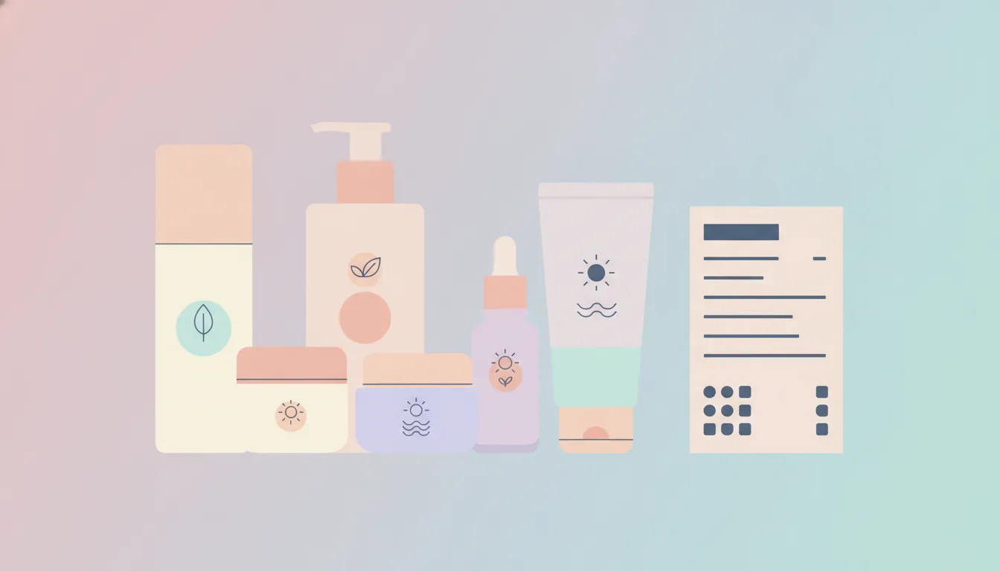

プチプラ vs デパコス韓国コスメ 成分表示の比較術
公開日: 2026-08-14
本ページのリンクには一部アフィリエイトリンクが含まれます(#PR)。
💄 プチプラとデパコス、そもそも何が違うのか
韓国コスメを選ぶとき、価格帯だけで「プチプラは物足りない」「デパコスなら安心」と判断してしまう人は多いのではないでしょうか。実際のところ、両者の違いは価格だけでなく、原料の選定やテクスチャーの仕上がり方に表れることが多いです。ただし高価格帯だから必ず優れているという単純な話でもありません。まずは成分表示という共通のものさしを使って、冷静に比較する視点を持つことが大切です。
🔍 成分表示の読み方の基本
化粧品の成分表示は、配合量の多い順に記載されているのが基本ルールです。水やグリセリンなど基材となる成分が上位に来て、香料や着色料は下の方に記載されることが多くなっています。つまり、パッケージの謳い文句だけでなく、注目したい成分がリストのどのあたりに位置しているかを見ることで、その化粧品の設計思想がある程度読み取れます。表示順を意識するだけで、パッケージのキャッチコピーに振り回されにくくなるはずです。
- 上位5成分:全体のベースを形づくる主要成分
- 中盤の成分:保湿剤や整肌成分など機能性を担う部分
- 下位の成分:防腐剤・香料・微量の美容成分
💰 プチプラ韓国コスメの成分傾向
プチプラ帯の韓国コスメは、近年成分開発の技術が底上げされており、以前ほど「安いから物足りない」という印象は薄れてきています。ヒト型セラミドやナイアシンアミドなど、少し前まではハイブランドの専売特許のように扱われていた成分が、手に取りやすい価格帯の商品にもしっかり配合されているケースが増えました。ただしコストを抑える都合上、複数の機能性成分を少しずつ配合し、全体としてバランスよく仕上げるという設計が多い印象です。単一の成分を高濃度で押し出すより、複数の成分を組み合わせて総合的な使用感を整える方向性と言えそうです。パッケージに大きく書かれた成分名が、実際には成分表示の後半に位置していることも珍しくないため、そこは一度確認しておきたいところです。
✨ デパコス韓国コスメの成分傾向
一方でデパコス帯は、特定の成分を高濃度で配合したり、独自の複合成分を使ったりする傾向が見られます。処方の安定性やテクスチャーの質感にもコストがかけられており、使用時のなじみやすさ、肌への広がり方に違いを感じる人もいるようです。とはいえ、成分表示だけを見て「濃度が高いから効果も比例して高い」と単純化するのは早計です。濃度と使用感、そして自分の肌との相性は別の話として考える必要があります。ブランドによっては独自の複合成分に特許名や造語が使われていることもあり、その場合は成分表示の中で分かりにくくなっている点にも注意が必要です。気になる場合は、公式サイトで基となる成分をどこまで開示しているかも比較材料になります。
🧴 品質を見極めるためのチェックポイント
価格帯にかかわらず、購入前に確認しておきたいポイントをまとめてみます。
- 自分が重視したい成分(保湿・整肌・皮脂バランスなど)が上位〜中盤に入っているか
- アルコールや香料の配合位置が、自分の肌タイプと合っているか
- 全成分表示に加えて、公式サイトなどで配合根拠が説明されているか
- 同じシリーズ内でプチプラとデパコスの成分を比較し、差分がどこにあるか
特に敏感肌の人は、香料やエタノールの記載位置が上位に来ていないかを確認しておくと、肌トラブルの予防につながりやすくなります。合わせて、開封後の使用期限やパッケージの記載内容も、品質を保ったまま使い切れるかどうかを判断する材料になります。
📦 テクスチャーとパッケージから見えること
成分表示以外にも、品質を判断するヒントは意外と身近なところにあります。例えばテクスチャーの安定性は、容器から出したときの分離やムラの少なさである程度確認できますし、遮光性のある容器を使っているかどうかは、配合されている成分の酸化しやすさへの配慮を反映していることがあります。プチプラだから簡易包装、デパコスだから高機能包装と決めつけず、実際にパッケージの説明文まで目を通す習慣をつけると、より納得感のある比較ができるようになります。
🌱 選び方の実践的なコツ
成分表示を比較する習慣がつくと、価格帯というラベルに惑わされにくくなります。例えば「乾燥が気になる季節はプチプラの高保湿ラインで様子を見て、メイクのりを重視したい日はデパコスの下地を使う」というように、用途別に使い分けるのも一つの方法です。無理に高い方を選ぶ必要はなく、自分の肌状態と予算のバランスを見ながら、成分表示という共通言語で比較検討する姿勢が、結果的に納得のいく選び方につながっていきます。季節や肌の状態は変化していくものなので、一つの商品に固定するのではなく、その時々で見直していく柔軟さも持っておくと選びやすくなるはずです。
❓ よくある質問
Q. プチプラでも十分な保湿効果は期待できますか?
配合されている保湿成分の種類や配合位置によって差はありますが、近年のプチプラ韓国コスメは保湿成分の選定が進んでいます。乾燥を防ぐ目的で選ぶ選択肢としては十分検討に値するでしょう。肌質に合うかどうかは個人差があるため、パッチテストなどで確認するのがおすすめです。
Q. 成分表示だけで肌に合うかどうか判断できますか?
成分表示は目安の一つであり、実際の使用感や肌への合いやすさまで完全に予測することは難しいです。気になる成分をチェックした上で、少量から試すなど段階的に導入すると安心です。
Q. デパコスの方が防腐剤は少ないのでしょうか?
必ずしもそうとは限りません。防腐剤の種類や配合量は処方設計によって異なり、価格帯と直接結びつくものではないため、成分表示を個別に確認することが大切です。
この記事でおすすめしたいアイテム
 PR
PR
 PR
PR
 PR
PR
本ページのリンクには一部アフィリエイトリンクが含まれます(#PR)。